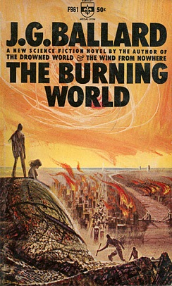
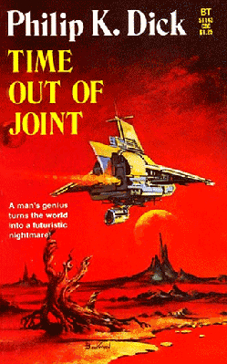
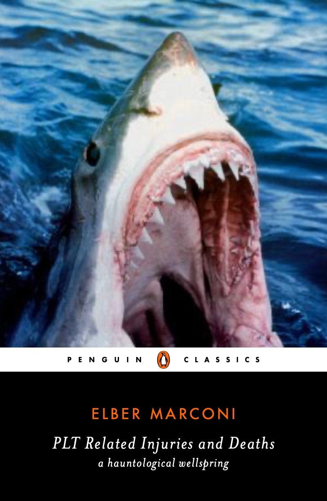

2025.08.19
The book The Burning World by J.G. Ballard is a post-apocalyptic science fiction tale about the near complete dissipation of water from the surface of the Earth.

The now defunct blog Strange Words had a beautiful description of The Burning World that I think is apt as a TL;DR of this post:
The Burning World is the tale of the long season. More specifically, it is a story of the timeless moment between the seasons, between end and the beginning of the cycle. It is the season of Shiva, whose eye opens and destroys the world in fire. And then it all begins again…
For programming language enthusiasts, the last decade has felt like one of Ballard’s “long seasons.” The explosive period between 2002-2013 gave us Scala, Clojure, F#, Go, Rust, Idris, Dart, Kotlin, Elixir, TypeScript, Pure, and Julia (just to name a few), while older languages like Python, JavaScript, and Haskell found new life.1 While the intervening years have seen additional programming languages hitting the scene, the impact of the languages introduced since 2013 have been relatively low-key by comparison.
A few years ago I considered writing a follow-up to one of my most popular posts /Programming Language Development, the past 5 Years/ but when I explored the langdev landscape I found that it had changed while I wasn’t paying close attention. The period from around 2002 to ~2013 was an amazing time to be a langdev geek but the years between 2014 and 2021 were humdrum. Of course there were new languages developed in the time-frame, but the industry-shattering instances were few and far between. I asked my Twitter friends at the time what they thought and received some very thoughtful responses.
The inimitable Chas Emerick made a great point about the langdev landscape changing to a hosted model:
Waaaay more interesting are languages as part of integrated systems that provide/ensure consistent semantics in various domains.
Languages as part of…
databases distributed computing primitives network infrastructure fabrication machinery robotics
Likewise, Jon Purdy elaborated:
We recognise now that a PL is not just a PL, it’s the core logic of a system for making things; and over the years there have been demos of new programming environment concepts, which people clearly want, as they aim to solve serious pains with usability and accessibility.
In other words: perhaps languages aren’t slowing down so much as spreading sideways. They are dissolving into domains like query languages, shader languages, build languages, DSLs for robotics or finance, etc. The langdev shift perhaps is less about one big new paradigm and more about fifty smaller ones, deeply integrated.
Carin Meier chimed in with a call for thinking at a higher-level:
The pace of innovation in any field is not constant - it happens in waves. Also as you become more personally expert in a field, your expectations become higher.
Adding to this point, Steve Klabnick stated:
1994-1995 was an amazing two years 2002 to ~2013 was an amazing ten years this is just gonna keep getting bigger and longer over time, i think.
In other word, the waves are arriving further apart. The next langdev season may not come for some years still. I’ll take a few paragraphs to tease out more nuance around the points made above.
Philip K. Dick’s science fiction novel Time Out of Joint presents a world where the familiar reality begins to peel away, revealing that the supposed infinite abundance was in fact a constructed illusion.

Over the many years, programming language development has seen very few paradigmatic shifts. Instead, new languages tend to mix and match feature-sets to solve particular programming problems.2 You can only mix and match so much before you run into a “narcissism of small differences” problem:
What remains are increasingly niche or baroque extensions. Dependent types, effect systems, linear logic are all interesting and important, but not the kind of broad paradigms that change the computing landscape. That said, scarcity itself can be inspirational. Today is not the first day where we thought that the well had run dry and it will not be the last. It’s very common for computerists to think that we’ve explored all of the combinations, and so far these claims have been proven wrong.
The idea that programming language developments ebb and flow over time seems highly plausible. It would be interesting to explore the history of programming language development to identify trends to see if history provides any insight about where we currently stand. At a quick glance, big langdev changes do seem to cluster:
That said, a deeper analysis of this type would be clouded by confounding variables. The most confounding of them all is that it would be extremely difficult to know how the state of the computing industry itself at any given time affects langdev trends. I suspect that there would be no way to separate langdev from the economic, cultural, and technological forces of its time. We live in a very specific computation world, and any next game-changing programming language will grow from it. The langdev landscape circa 2002-2013 were significant and saw adoption of functional programming, type inference, concurrency models, gradual typing, hygienic macros, meta-programming, and immutability. The soil from which new languages will grow is only just being fertilized with big ideas from those very languages like null safety, pattern matching, async/await, data-driven design, and higher-kinded types. Big ideas take time to… well… take.
New programming languages today are born into a world of heightened expectations. It’s not enough to have an elegant syntax or a clever type system. To be taken seriously, a new language is expected to ship with a complex set of “batteries included”:
And none of these “batteries” tackle the AI problem confronting potential new languages. That is, LLMs can’t generate code effectively in novel languages, creating a self-reinforcing “runaway leader” problem. Popular programming languages get more training data, which makes them more useful with LLMs, which in turn makes them even more popular. I fear that the future of programming may look like Python or Javascript.

In the 1970s, you could launch a new language with a paper and a maybe a compiler and/or interpreter. In 2025, you need an integrated product, a narrative, and enough momentum to bootstrap an ecosystem and on top of that a huge corpus of code that can only be created through sustained use. Modern langdev is daunting to say the least.
In recent years we’ve seen some interesting new languages crop up like Mojo, Vale, Carbon, Gleam that experiment at these edges. It remains to be seen if these languages are tomorrow’s languages.